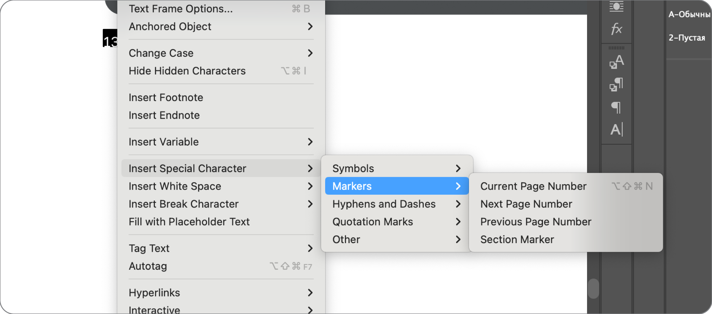
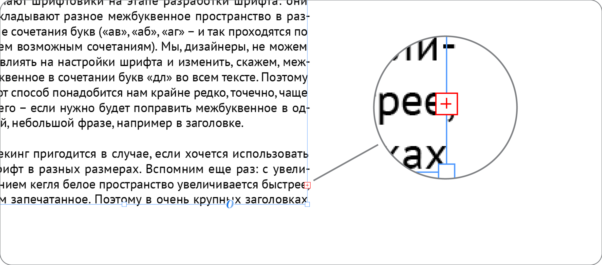

О программе
В этой главе мы кратко пробежимся по особенностям программы InDesign, а также узнаем про фишки, ускоряющие верстку и работу в ней.
В идеальном мире верстка книги начинается после того, как мы определились с макетом. Но так получается не всегда, потому что сложно учесть все своеобразие материала в момент анализа. Макет продолжает уточняться какое-то время после начала верстки и скорость внесения изменений напрямую зависит от знания основных фишек программы.
Кроме того, программа диктует нам конкретную последовательность работы. Например, после расположения всего текста во фреймах на макете, мы уже не можем автоматически поменять высоту и ширину этого фрейма. Придется либо менять его вручную на всех страницах, либо избегать таких ситуаций и заранее определяться с макетом. Если хочется работать быстро, нужно знать особенности программы. О них и поговорим в этой главе.
Главное об InDesign
Во-первых, в этой программе ничего не существует вне фрейма. Текст находится в текстовом фрейме, изображение - в фрейме для графики. Всего в индизайне 3 типа фреймов, но по факту нам нужно только 2: для текста и картинок.
Во-вторых, InDesign – это программа-компилятор. Она заточена на то, чтобы удобно подгружать файлы из других программ и отражать изменения, происходящие в исходниках. На первых этапах работы я всегда вставляю картинки в формате psd. Все изменения, которые я вношу в них, автоматически подгружаются в макет InDesign. Таким образом мне не нужно заново перелинковывать исходник фотографии с макетом. В InDesign даже можно вставлять другие файлы InDesign.
Чтобы вставить фото или файл в макет, нужно просто нажать commad+D.
InDesign – это компилятор. Из этого следует, что не стоит делать графику в этой программе, хоть она и располагает минимальным функционалом для этого (весьма скудным). Намного правильнее будет делать векторные изображения в отдельном файле Illustrator и вставлять готовую графику в макет через горячую клавишу commad+D.
Верстка
Мастер-пейдж. Самое базовое знание об Indesign, но о котором нельзя не сказать, потому что все остальные фишки будут так или иначе основаны на нем. Мастер-пейдж — это особый разворот, который является шаблоном для остальных страниц. На нем стоит размещать только сквозные элементы, то есть те, что встречаются нам на протяжении всей книги, или элементы, которые повторяются на нескольких страницах. Например, нумерация страниц, расположение текстового фрейма, заливка страницы. Мастер-пейджей обычно несколько, например, один для основных страниц и другой для шмуцтитулов, где, например, может отсутствовать нумерация страниц, в отличие от основных страниц. Мастер-пейджи можно комбинировать на развороте, назначая один на левую, а другой на правую страницы. Кроме того, допускается создание «дочерних» мастер-пейджей, которые наследуют свойства основного.

←
1
Master page
Автоматическая нумерация страниц. Колонтитулы и колонцифры – это элементы, которые можно и нужно автоматизировать. Проставляя их вручную на каждой странице, вы создаете себе в будущем кучу монотонной и бессмысленной работы. Представьте, что будет, если вам нужно будет поменять порядок глав, переместить страницы или удалить парочку разворотов. Чтобы включить автоматическую нумерацию, используется команда «Вставить специальный символ».
Для автоматической нумерации страниц выдели номер страницы и после нажатия мышки во всплывающем окне выбери Insert Special Character → Markers → Current Page Number.

←
2
Автоматическая нумерация
Еще можно сделать так, чтобы на страницы автоматически подставлялись необходимые колонтитулы. Это так называемые бегущие колонтитулы. Их возможно создать только если у вас уже настроены стили параграфа. Они работают следующим образом: мы указываем программе, какой стиль параграфа относится к заголовкам, она находит первый заголовок на странице и отображает его в колонтитуле.
Оба этих элемента (как и все сквозные элементы в книге) стоит располагать не на обычной странице, а мастер-пейдже. Это позволит вам в любой момент поменять их стиль и расположение на всех станицах книги
Связь текстовых фреймов.Такая же базовая вещь, как мастер-пейдж. Ели твой текст не помещяется в один текстовый фрейм, ты можешь связать его со следующим фреймом. Весь текст, что не поместился в первый, будет плавно перетекать во второй.
Для связи двух текстовых фреймов нажимаем на красный квадрат снизу первого фрейма и кликаем на второй фрейм.

←
3
Связь текстовых фреймов
Вставка текста по макету. Допустим, у вас есть текст на 50 страниц А4. Переносить его вручную на каждую страницу было бы крайне неудобно и трудоемко. В таких случаях используется функция вставки текста по макету, которая позволяет автоматически распределять текст по страницам в соответствии с заданным макетом. Для этого необходимо сначала настроить размер полей в мастер-пейдже и применит его к странице, где ты вставляеешь текст.
1. Создаем текстовый фрейм и вставляем туда весь текст
2. Создаем 2-ю страницу БЕЗ фрейма
3. Нажимаем на красный квадрат снизу фрейма на первой странице
4. Зажимаем SHIFT и тыкаем на вторую страницу
Важно: текстовые фреймы во всех последующих страницах будут
принимать формат полей.